INTRODUCTION - PANELS AND FRAME
- Path
- Descriptions > 72 PANELS AND FRAMES > INTRODUCTION - PANELS AND FRAME
- Kind
- system description
- Applies to
- engines: 1.4 8v, 1.6 16v, 1.3 JTD 16V, 1.9 JTD 8V; production: da 12/03; only with equipment: MY 2005
- Interactive page
- https://sloeber94.github.io/elrnDB-fDbl/en/#/223000285
Applies to: engines: 1.4 8v, 1.6 16v, 1.3 JTD 16V, 1.9 JTD 8V; all production periods
The design of the vehicle gives it a unique personality with all the bodywork variants that respond to the multitude of different usages.
At the front the grille and the headlamps are surrounded by plastic that protects against impacts at low speed.
The side panel features the rounded shape of the windows in the front doors and the extensive rear glass which produce a sensation of light and brightness that contributes to driving comfort.
The sliding side doors, the two rear asymmetrical doors or the tailgate do not alter the sense of harmony of the model but fit in naturally with the exterior design of the vehicle.
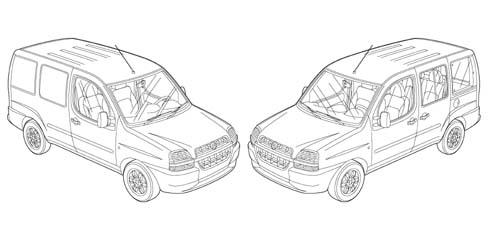
Drag coefficienct (cx) 0.32
PASSIVE SAFETY
The main objective of the features adopted in terms of passive safety is to create a survival chamber which, in the case of an accident, offers the passengers effective protection.
The bodyshell of the veihcle has been designed for controlled deformation in the case of front, side and rear impact and to absorb the energy developed by the impact without adversely affecting the vital spaces in the passenger compartment.
BENDING AND TORSIONAL STRENGTH
The high torsional and bending strength of the bodyshell guarantees the vehicle excellent passive resistance qualities producing a sensation of solidness and comfort when driving.
These excellent values also guarantee that the original specifications of the bodyshell are maintained over a period of time and there are no structural weaknesses that could adversely affect safety.
Torsional rigidity.
VEHICLE TRIM LEVEL | daNm/rad |
|---|---|
1. Stripped bodyshell + windscreen | 88700 |
2. Like 1 + swing rear doors | 98400 |
3. Like 2 + front doors | 101900 |
4. Like 3 + sliding side doors | 107300 |
Bending rigidity
VEHICLE TRIM LEVEL | daN/mm |
|---|---|
1. Stripped bodyshell + windscreen | 1500 |
2. Like 1 + swing rear doors | m |
3. Like 2 + front doors | 1620 |
4. Like 3 + sliding side doors | 1890 |
RESISTANCE TO FRONT IMPACTS
The main operations to the bodyshell for resistance to front impacts involve:
- front crossmember
- crash-box
- bonnet retaining hooks
- reinforcements on struts
- reinforcements on front pillars
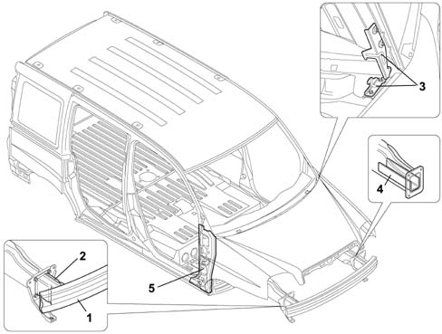
RESISTANCE TO FRONT IMPACTS
The vehicle comforms with front impact standard ECE R94 with the barrier offset in relation to the axis of the vehicle (cover of front section equal to 40%) at 56 Km/h
In this test checks are carried out on both structural measurements (made on the vehicle) and biomechanical ones (made on the occupant); the effects on the occupant are measured using special dummies.
Front crossmember
Applies to: engines: 1.4 8v, 1.3 JTD 16V, 1.9 JTD 8V; all production periods
View of front crossmember with crash-box
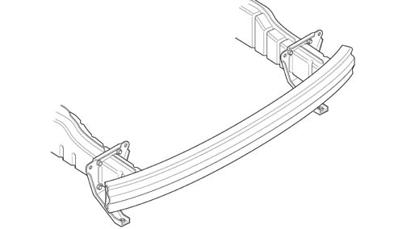
Front crossmember
Applies to: engines: 1.4 8v, 1.9 JTD 8V; all production periods
The front crossmember and the crash-box are a new feature in the range of group vehicles because the structural elements are integrated and fitted on the bodyshell using bolts.
They have been designed to reduce repair costs following impacts at low speed.
In the case of a front impact at 16 km/h with an offset barrier (front covering of the vehicle equal to 40%) only these two components are deformed.
The particular shape of the crossmember and the material from which it is made (highly resistant steel) guarantee that with this type of impact there is the minimum intrusion protecting the mechanical components.
Applies to: engines: 1.9 JTD 8V; all production periods
RESISTANCE TO SIDE IMPACTS
In the case of side impacts the bodyshell is capable of offering a high level of safety, providing programmed deformation which does not adversely affect the survival chamber.
The above has been achieved by:
- reinforcing the centre pillar
- adopting connecting ribs between the side pillars
- with the anti-intrusion bars and waist reinforcements on the doors
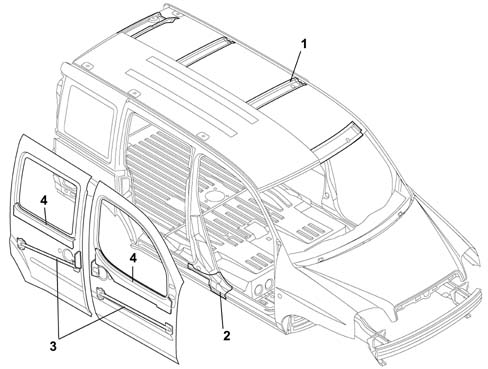
RESISTANCE TO SIDE IMPACTS
The vehicle conforms to side impact regulation ECE R 95 against a deformable barrier (centred in relation to the front seat positioned midway and adjusted to the lowest position) at 50 Km/h.
RESISTANCE TO REAR IMPACTS
The main operations to the bodyshell for resistance to rear impacts involve:
- rear crossmember
- crash-box
- reinforcements on floor panel
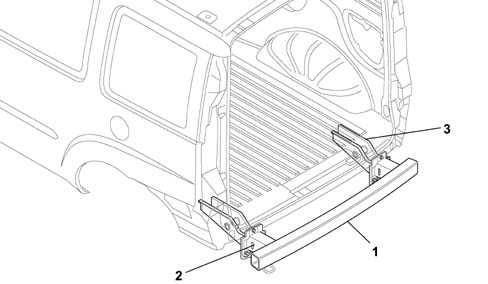
RESISTANCE TO REAR IMPACTS
The vehicle conforms to the "Japanese" rear impact standards against a rigid barrier at 50 Km/h (covering of the rear of the vehicle equal to 100%).
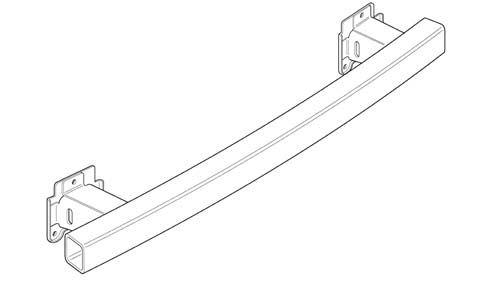
RESISTANCE TO REAR IMPACTS
The rear crossmember and the crash-box are a new feature in the range of group vehicles because the structural elements are integrated and fitted on the bodyshell using bolts.
They have been designed to reduce repair costs following impacts at low speed.
In the case of a rear impact at 16 km/h against an offset barrier (rear covering of the vehicle equal to 40%) the floor panel is not deformed.
DIAGRAM FOR CHECKING UNDERBODY
This chapter shows the specified bodyshell dimensions to ensure the best results are achieved when carrying out repair operations.
Perspective view
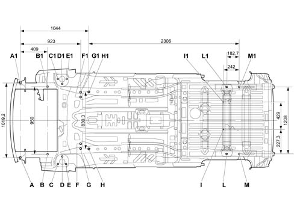
DIAGRAM FOR CHECKING UNDERBODY
Side view
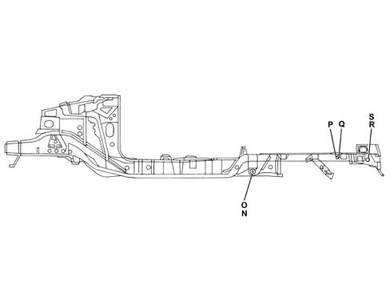
WINDSCREEN COMPARTMENT DIMENSIONS MEASUREMENT
The distances are expressed in millimetres with a tolerance of about 2 mm
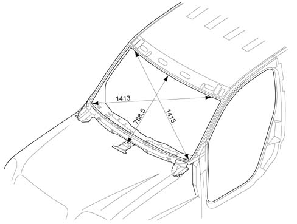
DOOR HOUSING DIMENSIONS MEASUREMENT
The distances are expressed in millimetres with a tolerance of about 2 mm
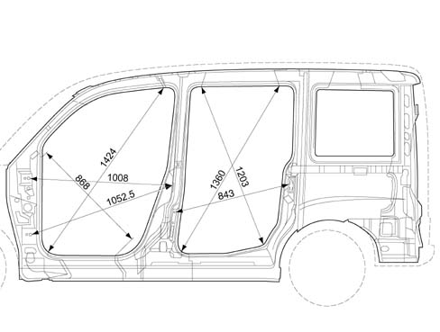
MEASUREMENT OF DIMENSIONS OF COMPARTMENT BETWEEN CENTRE PILLARS
The distances are expressed in millimetres with a tolerance of about 2 mm
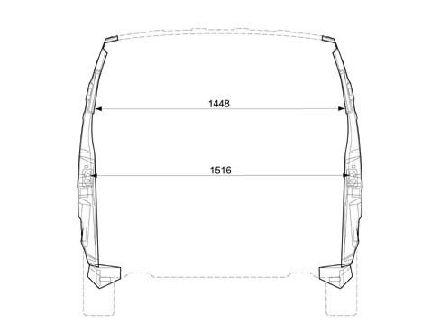
REAR COMPARTMENT DIMENSIONS MEASUREMENT
The distances are expressed in millimetres with a tolerance of about 2 mm
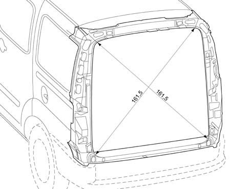
DIMENSIONS FOR THE ADJUSTMENT OF MOVING PARTS
To facilitate the operations of refitting the moving parts, the existing gaps are shown (in millimetres) to allow appropriate adjustment.
The adjustment procedures are described in the sections describing the removing and refitting of the moving parts.
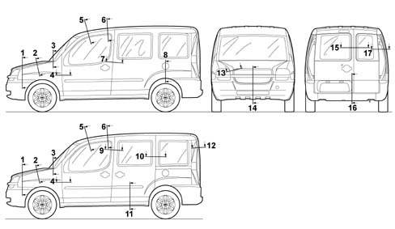
DIMENSIONS FOR THE ADJUSTMENT OF MOVING PARTS
Sections from 1 to 8
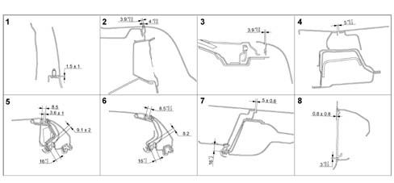
DIMENSIONS FOR THE ADJUSTMENT OF MOVING PARTS
Sections from 9 to 17
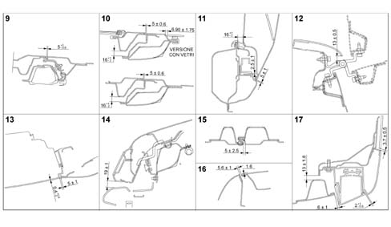
SOUND INSULATION
The CEE standards set an exterior noise level for the vehicle of 74 decibels, whilst for the interior of the passenger compartment, at a speed of 120 Km/h in fifth gear it is 73 decibels (76 decibels for the CARGO).
The improvement in driving comfort, in terms of quietness and quality inside the passenger compartment, has been mainly achieved through working on the following areas where noise is produced:
- rolling
- engine
- aerodynamic
All the engine types used on the vehicle belong to a new generation with technological features designed to improve acoustics and vibrations.
This same concept it also valid for the drive transmission components, the suspension and the bodyshell mountings.
Diagram showing internal noise figures for slow acceleration in 5th speed:
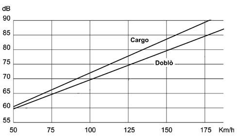
SOUND INSULATION
Diagram showing application of sound insulation and thermo-expandable products
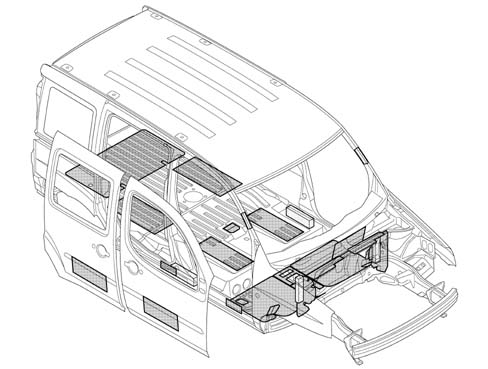
SOUND INSULATION
The sound insulation material mainly comprises bitumen.
Their task is to dampen the noise coming from mechanical vibrations in areas such as, for example, the underbody and the interior of the doors.
The thermo-expandable materials are made up of rubbers or synthetic resins and have the task of damping the box sections to eliminate acoustic propagation (noise, whilstling).
When the bodyshell goes in the ovens during the painting cycle these materials expand and vulcanize adhering to the inner surfaces of the panels with which they come into contact, completely filling the box section cavities.
Diagram 1 - application of sealants
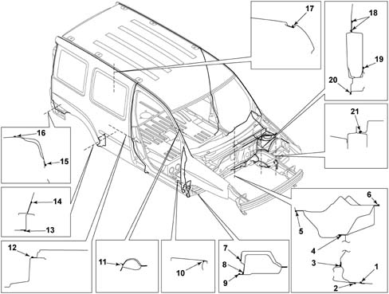
SOUND INSULATION
Diagram 2 - application of sealants
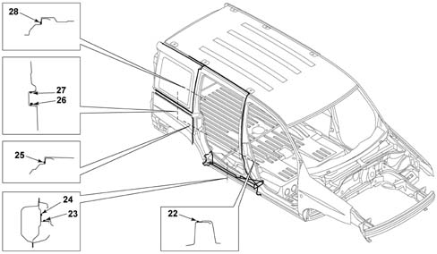
SOUND INSULATION
Diagram 3 - application of sealants
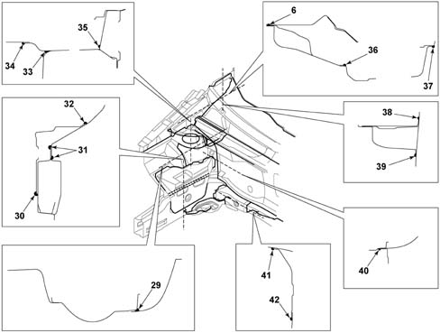
SOUND INSULATION
Diagram 4 - application of sealants
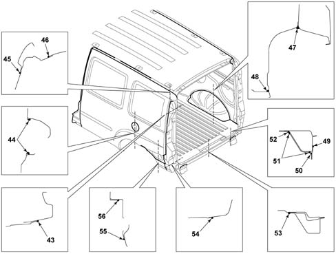
SOUND INSULATION
1. JOIN BETWEEN DASHBOARD SUPPORT AND LOWER ELEMENT CONNECTED TO DASHBOARD
2. JOIN BETWEEN LOWER ELEMENT CONNECTING DASHBOARD WITH DASHBOARD LOWER CROSSMEMBER
3. JOIN BETWEEN LOWER DASHBOARD AND DASHBOARD LOWER CROSSMEMBER
4. JOIN BETWEEN LOWER DASHBOARD AND UPPER DASHBOARD
5. JOIN BETWEEN UPPER DASHBOARD AND DASHBOARD BOX SECTION
6. JOIN BETWEEN UPPER DASHBOARD AND UPPER DASHBOARD BOX SECTION
7. JOIN BETWEEN FRONT DOOR COMPARTMENT SEAL AND DOOR HOUSING SEAL LOWER ELEMENT
8. JOIN BETWEEN FRONT PILLAR REINFORCEMENT DOOR HOUSING SEAL AND DOOR HOUSING SEAL FRONT LOWER ELEMENT
9. JOIN BETWEEN DOOR HOUSING SEAL LOWER ELEMENT AND FRONT INNER SIDE PANEL
10. OUTER JOIN BETWEEN FRONT WING AND LOWER ELEMENT
11. JOIN BETWEEN FRONT DOOR HOUSING SEAL AND WINDSCREEN PILLAR REINFORCEMENT
12. JOIN BETWEEN OUTER SIDE PANEL AND FRONT DOOR HOUSING SEAL
13. JOIN BETWEEN SIDE MEMBER LINING AND REAR SIDE MEMBER
14. JOIN BETWEEN FRAME REAR LOWER ELEMENT AND PANEL INNER FRAME
15. JOIN BETWEEN LIGHT CLUSTER LINING AND SIDE PANEL REAR LOWER ELEMENT
16. JOIN BETWEEN REAR LIGHT CLUSTER LINING AND REAR PILLAR REINFORCEMENT
17. OUTER JOIN BETWEEN ROOF PANEL AND OUTER SIDE PANEL
18. JOIN BETWEEN FRONT SUSPENSION PILLAR AND SIDE STRUT BOX SECTION
19. JOIN BETWEEN FRONT SUSPENSION AND FRONT SUSPENSION CROSSMEMBER REAR REINFORCEMENT
20. JOIN BETWEEN FRONT STRUT BOX SECTION AND FRONT SUSPENSION CROSSMEMBER REAR REINFORCEMENT
21. JOIN BETWEEN BATTERY DRIP TRAY MOUNTING REINFORCEMENT AND FRONT SIDE STRUT
22. JOIN BETWEEN SLIDING DOOR HOUSING SEAL AND FRONT DOOR HOUSING SEAL
23. JOIN BETWEEN SLIDING DOOR HOUSING SEAL WITH LOWER ELEMENT ON SLIDING GUIDE PANEL
24. JOIN BETWEEN REAR SIDE MEMBER REINFORCEMENT AND LOWER ELEMENT ON SLIDING GUIDE PANEL
25. JOIN BETWEEN SLIDING DOOR HOUSING SEAL AND LOWER OUTER PANEL
26. JOIN BETWEEN UPPER OUTER PANEL AND CENTRE UPPER ELEMENT
27. JOIN BETWEEN LOWER OUTER PANEL AND CENTRE UPPER ELEMENT
28. JOIN BETWEEN SLIDING DOOR HOUSING SEAL AND UPPER OUTER PANEL
29. JOIN BETWEEN FRONT SUSPENSION PILLAR AND FRONT INNER WHEEL ARCH
30. JOIN BETWEEN ENGINE MOUNTING REINFORCEMENT AND FRONT SIDE STRUT
31. JOIN BETWEEN STRUT BOX SECTION AND INNER PANEL ELEMENT
32. JOIN BETWEEN ENGINE MOUNTING REINFORCEMENT AND INNER PANEL ELEMENT
33. JOIN BETWEEN SERVICES CHAMBER SIDE ELEMENT AND FRONT SUSPENSION DAMPER
34. JOIN BETWEEN SERVICES SIDE CHAMBER AND LOWER DASHBOARD BOX SECTION
35. JOIN BETWEEN SERVICES CHAMBER SIDE ELEMENT AND UPPER SIDE MEMBER AND INTERNAL PANEL
36. JOIN BETWEEN UPPER DASHBOARD AND SERVICES CHAMBER SIDE ELEMENT
37. JOIN BETWEEN SERVICES SIDE CHAMBER AND UPPER DASHBOARD BOX SECTION
38. JOIN BETWEEN DASHBOARD UPPER CROSSMEMBER AND FRONT INNER SIDE PANEL
39. JOIN BETWEEN UPPER DASHBOARD AND FRONT INNER SIDE PANEL
40. JOIN BETWEEN LOWER DASHBOARD AND FRONT SUSPENSION DAMPER
41. JOIN CONNECTING LOWER FRONT CROSSMEMBER SIDE STRUT WITH FRONT SIDE STRUT
42. JOIN CONNECTING LOWER FRONT CROSSMEMBER SIDE STRUT WITH DASHBOARD LOWER CROSSMEMBER
43. JOIN BETWEEN HEADLAMP LINING AND OUTER PANEL
44. JOIN BETWEEN FUEL FILLER LINING AND LEFT OUTER SIDE PANEL
45. JOIN BETWEEN HEADLAMP LINING AND OUTER PANEL
46. JOIN BETWEEN HEADLAMP LINING AND ROOF EXTERIOR
47. JOIN BETWEEN REAR INNER WHEEL ARCH AND PANEL INNER FRAME
48. JOIN BETWEEN REAR FLOOR AND INNER REAR WHEEL ARCH
49. JOIN BETWEEN REAR BUMPER MOUNTING BRACKET AND REAR CROSSMEMBER CONNECTING SIDE MEMBERS
50. JOIN BETWEEN REAR BUMPER MOUNTING BRACKET AND SUSPENSION MOUNTING REAR REINFORCEMENT
51. JOIN BETWEEN MOUNTING REAR REINFORCEMENT AND REAR CROSSMEMBER CONNECTING SIDE MEMBERS
52. JOIN BETWEEN MOUNTING REAR REINFORCEMENT WITH REAR SIDE MEMBER
53. JOIN BETWEEN REAR CROSSMEMBER CONNECTING SIDE MEMBERS WITH REAR FLOOR
54. JOIN BETWEEN HEADLAMP LINING AND REAR LIGHT CLUSTER LINING REINFORCEMENT
55. JOIN BETWEEN SIDE PANEL REAR LOWER ELEMENT AND REAR LIGHT CLUSTER LINING REINFORCEMENT
56. JOIN BETWEEN OUTER PANEL AND SIDE PANEL REAR LOWER ELEMENT
The sealants are plastic materials with a paste consistency.
They harden through the effect of heat when the bodyshell goes into the ovens during the painting cycle.
The sealants are applied using an extrusion or spray gun.
After hardening they have the appearance of a flexible mass adhering to the panel and perform sound insulation and sealing functions protecting the panel joins from water, air and dust.
Lastly, they are painted using the special products in the painting cycle.
PROTECTION OF THE BODYSHELL
The vehicle body is designed to withstand for many years any environmental attack to the interior, not visible but potential subject to corrosion, and exterior, particularly subject to damage that may affect the exerior appearance of the vehicle.
This result is achieved through the extensive use of galvanized and double galvanized panels and by carrying out multiple treatments on all the surfaces.
Galvanising
The panels may be zinc coated by means of two different technological processes:
- deposition of zinc through galvanizing process
- deposition of zinc through fire
In the deposition during the galvanizing process the panel comes into contact with (in the case of a single layer of zinc) or is immersed in (in the case of double galvanizing) a solution of zinc salts; a layer of pure zinc with a high level surface finish is deposited through the electrolytic effect.
In fire deposition the molten zinc is deposited on the panel through a thermal effect; in this process zinc thicknesses of up to 20 micron can be reached, compared with 8 microns normally achieved through the galvanizing process.
Iin the presence of water and together with the iron in the panel, the layer of zinc produces an electric torque with an electrical potential that prevents the oxidation of the iron.
On this vehicle 82% of the bodyshell is made up of galvanized panels, divided between 55% of double galvanized panels and 27% single galvanized panels.
After the galvanizing treatment the bodyshell is subjected to bonderization (a treatment that cleanses the panels of any greases or surface oxidation) and to cataphoresis, a fundamental treatment for protection, above all of the areas affected by welding, and subsequent painting.
All the joins between the body panels are carefully sealed to prevent penetration.
Painting
Painting is designed to protect the panels and maintain a good aesthetic appearance (bright, shiny colour) over a period of time.
The vehicle comes in a range of 5 pastel colours and 5 metallic colours.
All the pastel colours except white have a double layer (opaque base coat + clear coat).
The table below shows the colour range and codes for the vehicle.
PASTEL COLOURS
Description | Code |
|---|---|
Titian Red | 199 |
White | 249 |
Capri Blue | 451 |
Orange | 570 |
Carioca Yellow | 241 |
METALLIC COLOURS
Description | Code |
Baroque Red | 124 |
Midnight Blue | 426 |
Steel Grey | 647 |
Elba Light Blue | 718 |
Island Green | 307 |